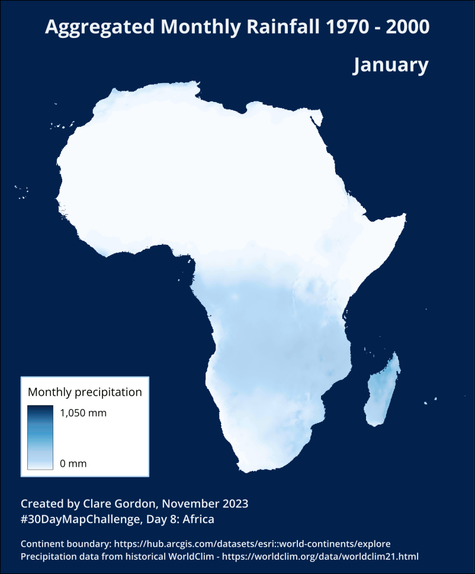

Exploring Worldclim data further.

Downloaded historic precipitation data from https://worldclim.org/data/worldclim21.html
Units are mm. A raster layer for each month. Aggregated data for 1970 to 2000.
Data described in:
Fick, S.E. and R.J. Hijmans, 2017. WorldClim 2: new 1km spatial resolution climate surfaces for global land areas. International Journal of Climatology 37 (12): 4302-4315.
Information about Bioclimatic variables
To prepare data:
1,500 mm.Set up a layout, then exported an image for each month.
Used GIMP to create an animated GIF.
File > New then enter correct size and orientation. Set resolution under Advanced.Image > Mode > Indexed. Stick to defaults for now!File > Export As - give file name .gif extension.As animation and choose options.
Frame disposal should be set to One frame per layer (replace)Use delay entered above for all frames and Use disposal entered above for all frames.Delay as required to change speed of animation, e.g. 1000 milliseconds for a fairly stately pace!